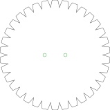

Buzz disc — two designs
This is a dangerous object. It can injure you, and it can injure anyone near you. Unlike a bullroarer this one spins close in — held between two hands, roughly at chest height, with your face above it. The toothed disc is about 38g in a single 3 mm thickness and 115g laminated three times, and its rim is a ring of points turning at speed. It can also come off the cord if a hole tears or a knot slips. Keep it clear of your face, check both holes and the loop before each session, and read Handle it with care first.
A buzz disc is a flat piece threaded on a loop of cord that passes through two holes near its centre. Wind the loop up by swinging the disc, then pull and release the ends rhythmically: the cord unwinds, spins the disc, winds up the other way, and the disc whirrs back and forth. A toothed rim turns that whirr into a buzz.
Two designs, both cut-ready, both with a pair of 5 mm cord holes.
Get the files
- Everything as a ZIP — both designs.
- Repository — if you want to change the outline or the hole spacing.
- Or click either picture below to download that one cut file.
Released under CC0 1.0 — do what you like with them, no attribution needed. Built for LaserMadeMusic.
The rest of the build files — every instrument, generator and tool, indexed.
The two designs
Click either to download the cut file. The pictures are display renderings — the cut files draw a hairline on no background at all, which a browser shows almost invisibly, so these are thickened and painted onto a light ground and cropped to the part. Green, orange and cyan are darkened in the picture — at full strength they are too pale to read against a light ground. The cut file keeps the exact values. Each is at its own scale; read the sizes rather than the pictures.
 |
|
| Toothed disc · 159 × 160 mm | Plain bar · 150 × 40 mm |
What the files contain
Drawn by buzz_disc.rs from each disc's parameters (by hand in Inkscape until 2026-11-08; the toothed rim is regular since, see Changing it):
| Design | Outline | Cord holes | Spacing, centre to centre |
|---|---|---|---|
BuzzDisc1.svg |
159.4 × 159.5 mm, 34 teeth | two, 5 mm | 30 mm |
BuzzDisc2.svg |
150.0 × 40.0 mm rectangle | two, 5 mm | 25 mm |
In both, the pair of holes straddles the centre and sits on the centreline — 15 mm and 12.5 mm either side of it respectively. That symmetry is what lets the disc wind and unwind evenly instead of wobbling.
Each file is cropped to the part itself, so the sheet is the outline — 159.4 × 159.5 mm for the disc, 150 × 40 mm for the bar. Output is millimetre-true — 1 user unit = 1 mm with a physical width/height — so it prints and cuts at real size.
Colour is the cut order
Colour is the cut order, and it is the same in every LaserMadeMusic repository: blue engraves, then green → orange → cyan → black. Black is always the last cut, the one that frees the part; violet means skip and is never cut. A file uses only the stages it needs. There is no engrave layer here, and only two of the four cut stages are used.
| Colour | What | Why then | |
|---|---|---|---|
| 1 | green #00ff00 |
the two cord holes | while the part is still whole |
| 2 | black #000000 |
the outline | frees the part, so it goes last |
Give both an explicit operation. A per-colour job silently skips any colour you leave unmapped — leave green out and you get a disc with nothing to thread.
What the two designs do differently
The toothed disc is the buzzing one. Its rim is cut into triangular teeth, and those teeth chopping the air are what turn a quiet whirr into the sound the instrument is named for. It is also the larger and heavier of the two, which means more stored energy and a longer run between pulls.
The plain bar has no teeth and a much smaller area. Expect it to be quieter and faster to spin up — closer to a whirring button than a buzzer. It is the simpler cut, and the better first one to try.
Before you cut
Cut these in 3 mm Baltic birch plywood — that is what they are built in. The disc is under real tension in use and the cord holes are where it fails: a ply that delaminates gives way there first, which is why Baltic birch and its void-free core is worth the difference over a cheaper sheet.
Two or more laminations may sound better. Cut the same shape twice or three times and glue the copies face to face. A thicker disc carries more mass at the same radius, so it stores more energy per wind and runs longer between pulls — and the teeth present a deeper edge to the air. Worth trying before you decide the single-thickness version is what it sounds like. Line the cord holes up when you glue: they are what the whole thing turns on.
The cord is not in these files. A continuous loop through both holes is the usual arrangement; length and thickness are yours to settle by trying.
Handle it with care
Unlike a bullroarer, this one spins close to you — held between two hands, roughly at chest height, with your face above it. Mass, speed and shape all matter, and the lamination advice above makes the first of them worse on purpose.
Mass. The toothed disc is about 38g in a single 3 mm thickness, 77g laminated twice and 115g three times (Baltic birch near 680 kg/m³). That is a meaningful weight spinning a hand's width from your fingers.
Speed. A wound cord releases quickly, and the rim of a 160 mm disc travels far faster than its centre. That rim is where all the teeth are.
Shape. The toothed rim is the whole point of the design — it is what makes the buzz — and it is a ring of points turning at speed. It does not have to be sharp to catch skin.
So: keep it clear of your face, and be aware the disc can come off the cord if a hole tears or a knot slips. Check both holes and the loop before each session, especially on a laminated disc where the glue line runs right through them. The plain bar has no teeth and far less area — it is the gentler one to learn the motion with.
Files
BuzzDisc1.svg · BuzzDisc2.svg |
the two cut-ready designs |
previews/ |
display renderings — not cut files |
buzz-disc-3d.html |
the 3D view, assembled from the cut files — drag to turn |
buzz_disc.rs |
draws both cut files and writes the SolidCraft designs from each disc's parameters (Changing it, below) |
solidcraft/ · step/ |
the SolidCraft designs and the STEP files built from them |
viewer.rs |
builds buzz-disc-3d.html from the cut files, with the turn3d module in lasermade-tools: cargo build --release, then target/release/viewer |
Cargo.toml · Cargo.lock |
the Rust package for buzz_disc.rs and viewer.rs; it expects the lasermade-tools checkout beside this one |
.repro |
how every shipped drawing and page is reproduced |
index.md · index.html |
this page; the markdown is the source |
Changing it
Each disc is a few numbers, and each is a flag on buzz_disc.rs (with --disc=NAME, since each has its own; a dash for each underscore) and a parameter of the same name in that disc's SolidCraft design:
cargo build --release
target/release/buzz_disc --disc=sawtooth-disc --teeth=28 --no-writeWithout --disc it redraws both at their defaults. Each run prints the part's size and mass a lamination, and a validation block: the cord holes either side of the centre, at least 3 mm of ply between and around them, the outline, and the bed. --out=DIR writes elsewhere; --no-write only checks.
The toothed rim is regular since 2026-11-08. The drawn rim was a polar wave: going round, the radius rises linearly with the angle up a flank, holds at the tip along an arc about the centre, and falls down the next flank, with no flat at the root. But it was drawn by hand: 34 teeth whose tips and roots wandered ±0.6 mm round the turn, two tops split in two, and a short flat where the drawing closed. Now every tooth is the same, and the defaults are the drawn rim's averages: 34 teeth, tips 159.5 mm across, roots 138.2 mm, each flank 22% of a tooth's pitch (2.33°) and the tip the rest (5.94°). In the cut file each flank is a cubic Bézier with the polar curve's own end tangents, within a micrometre of it, and each top an arc.
sawtooth-disc
| parameter | default | what it is |
|---|---|---|
ply |
3 mm | the ply: one lamination |
laminations |
1 | discs glued face to face: the design's thickness is laminations × ply |
teeth |
34 | teeth round the rim |
tip_d |
159.5 mm | across the tips |
root_d |
138.2 mm | across the roots |
flank |
0.22 | each flank's share of a tooth's pitch; the tip has the rest |
hole_d |
5 mm | a cord hole |
hole_gap |
30 mm | cord hole centre to centre |
plain-bar
| parameter | default | what it is |
|---|---|---|
ply |
3 mm | the ply: one lamination |
laminations |
1 | discs glued face to face: the design's thickness is laminations × ply |
length |
150 mm | the bar, end to end |
width |
40 mm | the bar, across |
hole_d |
5 mm | a cord hole |
hole_gap |
25 mm | cord hole centre to centre |
SolidCraft designs and STEP files
solidcraft/buzz-disc-NAME.solidcraft.json is each disc as a parametric SolidCraft design, written by
target/release/buzz_disc --no-write --solidcraft=solidcraftand SolidCraft builds each design file and STEP file from it:
cd solidcraft
solidcraft-cli run buzz-disc-sawtooth-disc.solidcraft.json --save buzz-disc-sawtooth-disc.sc --out ../step/buzz-disc-sawtooth-disc.step --quiet
../../lasermade-tools/target/release/sc-slim buzz-disc-sawtooth-disc.scEach is one body, laminations × ply thick. The toothed disc is the root disc with one tooth joined to it, its flanks drawn from their formula, patterned round teeth times, so the tooth count is a parameter like the rest. Built, each body's volume matches the exact area the generator works out to within 3e-5, and with five or six parameters moved at once (the disc at 28 teeth, 150 mm across, 30% flanks, two laminations) the design builds what the generator draws at those values. .repro checks all six files. The STEP files used to be written from the 3D view by step-export; since 2026-11-08 SolidCraft builds them.
The files:
solidcraft/buzz-disc-sawtooth-disc.solidcraft.json·solidcraft/buzz-disc-sawtooth-disc.sc·step/buzz-disc-sawtooth-disc.stepsolidcraft/buzz-disc-plain-bar.solidcraft.json·solidcraft/buzz-disc-plain-bar.sc·step/buzz-disc-plain-bar.step
Credits
Made by Michael Gernreich with Claude (Anthropic), working in Claude Code, which co-wrote the code and the documentation. Commits Claude made carry a Co-Authored-By: Claude line.